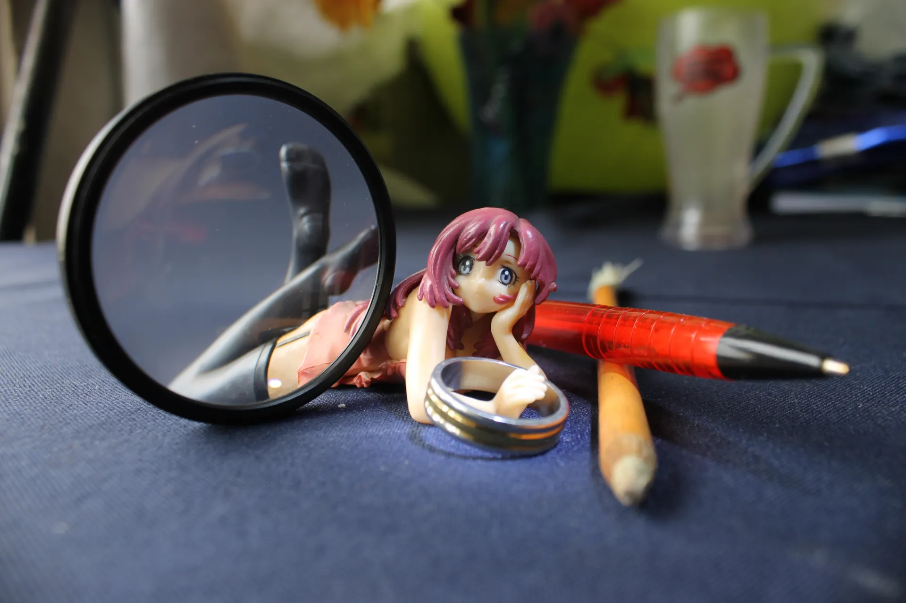
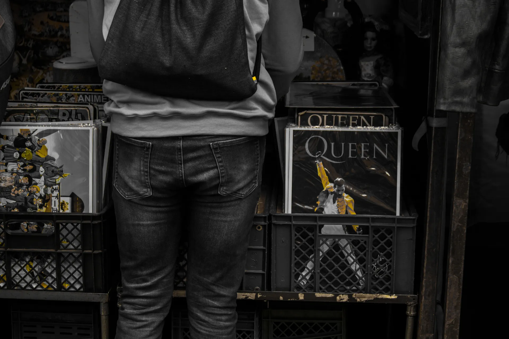
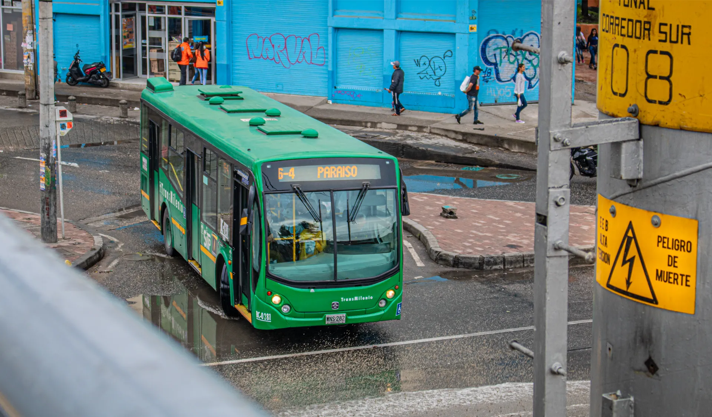
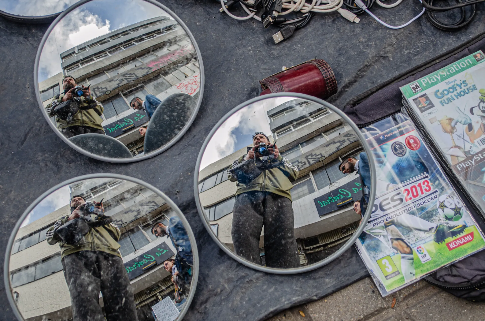
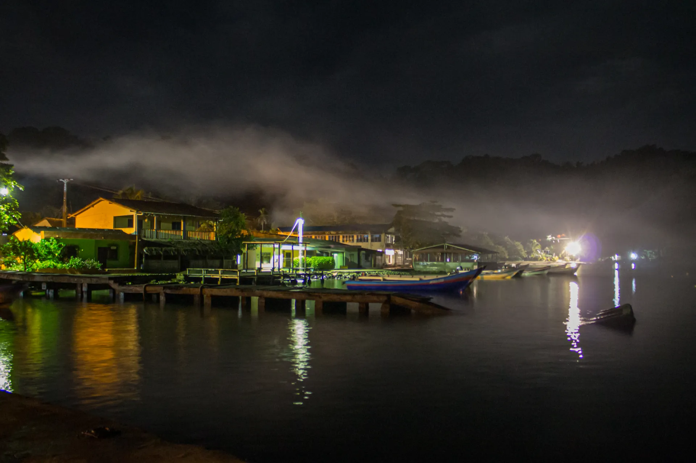
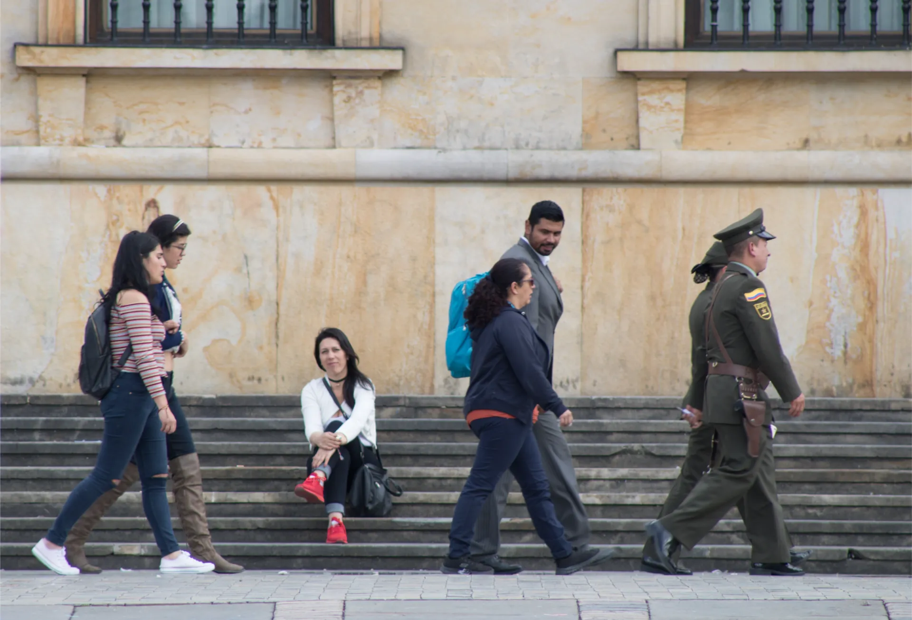
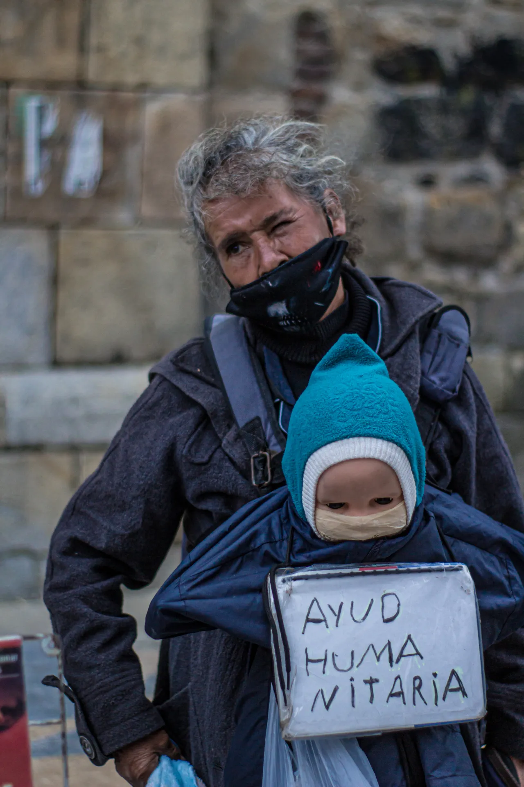

Trabajé hace algunos años en el área de la fotografía. Era un oficio agradable, a pesar de las exigencias de los clientes, pero con la llegada de los celulares con cámara la industria cambió. No hice una buena transición. Aunque conservé mi cámara personal, negándome a usarla en automático o a tomar fotos con el teléfono, la fui guardando paulatinamente hasta dejarla en un rincón olvidado. Un robo me dejó sin equipo y me sumergió en una depresión de la que no estoy seguro haber salido del todo.
Tiempo después logré adquirir una cámara, y luego llegó otra a través de un amigo. Equipos viejos, pero funcionales. Sin embargo, seguía sin usarlas. El mundo de la fotografía actual es tóxico. Después de años consumiendo videos, me di cuenta del daño que me hacía ese purismo obsesionado con el costo de los equipos y las técnicas rimbombantes. Ese elitismo de fondos inagotables me inyectó un síndrome del impostor paralizante; sentía la necesidad de complacer a alguien más aparte de mí. Suena chistoso cuando se dice en voz alta.
Uno de mis primeros intentos con la fotografía. Estaba estrenando el primer equipo que tuve, una cámara T3.

Una escena que capturó mi atención mientras caminaba por un mercado de las pulgas.

El contraste del entorno: el poste del autobús anuncia un "peligro" inminente en una localidad donde, efectivamente, no es muy recomendable estar por cuestiones de seguridad.

Un autorretrato a través de los espejos en la calle. Así fue como decidí tomarme una foto a mí mismo.

Una de mis primeras experimentaciones con fotografía nocturna, usando un trípode y larga exposición con aquel primer equipo. Fue en Sapzurro, justo al pie de Panamá, saliendo de Colombia.

Plaza de Bolívar. Todos a su alrededor parecen estar en pareja o acompañados, menos ella, que me mira fijamente como si yo, el fotógrafo, fuera su acompañante en ese instante.

Contexto puro y crudo. Tomada en 2021, justo después de que se levantaran los confinamientos por la pandemia y estallaran las protestas contra el gobierno. Un reflejo de cómo la gente necesitaba ayuda real en medio de los desmanes de los cuerpos de seguridad estatal (ESMAD).
